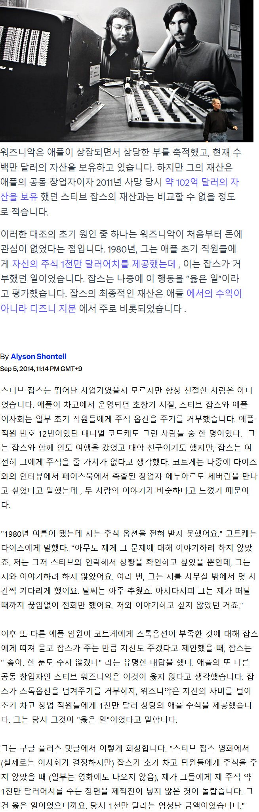

워즈니악 없었으면 지금의 잡스도 없었다고 하지만 잡스가 없었으면 지금의 워즈니악도 없었지
결국 지금의 애플이 있는건 잡스가 있었기 때문이라 생각하는데
ㅇㅇ 둘 다 필요했음
애플이 있는건 잡스때문이지만
잡스는 워니즈악이 없었으면 성공하지 못했을거고
워니즈악은 잡스 없었어도 성공했을거임
pc의 시대를 연 장본인이고
잡스만나기전에 이미 hp라는 대기업에 다니면서 pc부서를 만드려고 했었음
워니즈악의 pc가 애플이냐 hp냐 그 차이 정도였을뿐
이런 씨발!!! 잡스 때문에 인어공주가 그렇게 된거엿어?
워니즈악은 누구냐
워즈니악 ㅋㅋ 미안하다 이름을 잘 못외운다...
워니즈악? ㅋㅋㅋ
두회뇌로는 이것런도 다 문없제이 읽낼어수 있다고 하긴 하더라
자서전을 반만 읽었구나
후에 애플에서 쫓겨난 후 과정만 봐도 비범함
자서전 읽어 봤는데
아무리 좋게 포장 해도 개새끼 임
자서전을 제 3자 입장으로 다시 읽어 봐라
아니면 다른 자서전도 읽어 보던가
전부 읽었지 잡스가 빨릴만한 인물이 아니라는것도 확실히 알았고...
그래서 자서전 읽은후로 존경하는 인물이 바뀌었음.
오죽했으면 직원이 잡스 면전에다 바지내리고 책상위에 오줌 갈길거라고 결심까지 하게 만들었겠냐...
거기에 설계팀 말 싹다 무시하고 말도안되는 본인 고집때문에 성공할수 있었던 제품도 쪽박차게 만들고
이것외에도 면접자 대놓고 능욕하면서 꼽주고 헤아릴수가 없을 지경임...
잡스가 쫒겨난것 역시 이사회 입장에서는 당연한 결정이었음.
그냥 생각해보면 마케팅과 장사수완이 좋았고,
적절한시기에 운까지 겹쳤기에 성공할수 있었다고 생각함
명암이 있다 정도로 받아들여야지
이새끼는 순전 운빨이네 라고 하기엔 비범한 면이 많음
일례로 쫓겨나고 차린 픽사의 성공이라거나(next는 망했지만), 망해가던 애플 살리고 지금의 초거대기업을 만들었다거나
비범한 부분이 분명 있으나 마케팅 능력은 암에는 안 통하니까
치료할 수 있는 암도 고집부리다 치료시기 놓칠 정도의 판단력과 고집
마오쩌둥 생각나는 부분이 있어
인성엔 문제있지만 미래보는 능력은 탁월하지. PC 혁명 일으켰고 아이폰으로 모바일 혁명도 일으켰잖아.
워즈니악도 훌륭한 엔지니어지만 지금도 그렇지만 훌륭한 엔지니어는 깔림. 나라당 수십명은 있음. 하지만 저런 미래보는 능력은 세계당 십여명 있으려나..
앱 생태계를 구상한것만으로도 천재 맞는데 씹새끼도 맞는말이지
이 대결. 살아남은 워즈니악의 승리네~
살아남는 자가 강하다.
빨리 죽다니, 잡스 허~~접
"그렇게까지 치졸하게 본인 돈만 아득바득 긁어모았으니 잡스는 오래도록 잘 먹고 잘 살았겠죠?"
"수술만 하면 되는 암 걸렸는데 대체의학 믿고 뻐팅기고 의사 말도 안 듣다가 60살도 못 찍고 죽었어요."
ㄹㅇㅋㅋ 병신 그 자체
잡스 60살도 못찍음??
굿다이노~
살아남은자가 강한법
잡스야 그곳에선 착하게 살거라
원툴이지 잡스도, 팀쿡도 재고 원툴이고 워즈니악도 원툴이고
결국 하나가지고는 성공하기는 힘든데 조합이 중요한거 같음
그 원툴을 전세계급으로 잘하면 너도 재벌될수있음
그랫음 좋겟당 ㅋㅋㅋ 고마워
대인배 워즈니악
잡스같은 새기가 있어야 사업이 성공하는건 맞는데 사업 시작하려면 워즈니악이 있어야함
결국먼저디진건 잡스ㅋㅋ 그것도 지팔지꼰
췌장암 초기에 발견한 엄청난 운빨이었는데
그 지랄떨다 디졌으니
얼마나 꼰대였는지 알만함
잡스는 빨리 뒤진게 참 쌤통임 보면 볼수록
프레젠테이션 잘하는 병신이었던건가
잡스도 거품이 너무 껴있긴하지... 애플1, 애플2 까지 애플이 수천억을 벌고 사업모델 확장 시킬 자금을 이걸로 만들어놨는데 설계부터 제작까지 전부 워즈니악이 하고 잡스는 마케팅만 담당했었음 그러면서도 지분은 1대1로 나눴고ㅋㅋㅋ 워즈니악이 돈욕심 있는 인물이었으면 2대8로 잡았어도 잡스는 할말이 없었음...
중학생때 잡스 자서전읽으면서 뭐지 호구새낀가? 아님 잡스가 한번 빨아준건가? 이생각까지도 들었었음